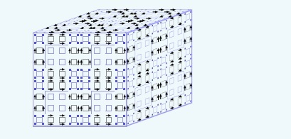

|
With
Mathieu Sablik: Quantified block gluing, aperiodicity and entropy of multidimensional SFT.
Accepted for publication in Journal d'Analyse mathématique [
arXiv].
In this text, we relate a computational transition
effect for the entropy of bidimensional subshifts of finite type for a quantified version of a mixing-type property.
By computational transition, I mean that when this quantity (the minimal distance of mixing) is
sufficiently small, entropy is algorithmically computable, and it is uncomputable (more precisely, the possible values of entropy
are characterized as the non-negative numbers that are computable from above)
when the quantity is sufficiently large. For the uncomputable area, we ameliorate M.Hochman and T. Meyerovitch's construction (itself
an amelioration of R.Robison's construction embedding Turing computations into a hierarchical aperiodic SFT).
In order to adapt the construction to the mixing-type property, we introduce many tools and gadgets that
mainly let Turing machines and all the architecture allowing their implementation to have more chaotic
behaviors. In later constructions on SFTs with minimality property, we re-used these tools. Let us
also note that there is, between this construction and the one of M.Hochman and T. Meyerovitch, an increase in
complexity in terms of interacting gadgets, that brought to my mind the idea of an analogy with biological
systems. In my doctoral thesis, I developped this analogy mechanism by mechanism. Besides answering
to the problem 9.1 in the seminal article of M. Hochman and T.Meyerovitch, this construction provides
tools for some problems for which the fixed-point constructions are limited by their use of universal
Turing machines.
|

|
With
Benjamin Hellouin: Effect of quantified irreducibility
on subshifts entropy.
Discrete and Continuous Dynamical Systems, 2018 [
arXiv].
Ideally, we would like to make the transition area more precise for bidimensional SFT.
However, this problem seems quite hard, in particular since it is difficult to find
exemples of SFT in this area. With Benjamin, we studied the same problem
for a more flexible class of bidimensional subshifts, those whose language is decidable.
With quite some efforts, we were able to characterize a threshold
with a summability condition on the mixing gap function. The proof
involves an ingenius extension of existing arguments for the part below the threshold.
For the part above, we code one-dimensional subshifts on alphabet {0,1} defined
by a sequence of restrictions on the possible number
of 1 symbols in length n words for all n, making use of an approximation of the change in entropy induced
by a perturbation in the sequence of restrictions.
A
presentation of this article
|
|

|
With
Mathieu Sablik: A characterization
of the possible entropy dimensions of minimal Z^3-SFT. Accepted for publication in
Discrete and continuous dynamical systems, under revision [
arXiv].
The minimality constraint (which forces any pattern to appear in any configuration)
was known to break all the constructions embedding Turing computations into SFTs
on many points. In this text, we achieve an adaptation to this embedding to
minimality constraints. The main idea is to use counters to alternate
all the possible local behaviors of the machines and the embedding architecture. For
this purpose, we needed these possible behaviors to be easily descriptible and determined with
a set of bits that would be part of the counter's state. That is where we re-used
the tools developped for mixing SFT constructions. Moreover, we needed to force
the counter to have co-prime periods, without the use of a Turing machine with
a general formulation (without which we would end in an endless loop of simulation of
the simulation, etc). For this purpose, we introduce in the counter
a non-coding part (triggering an analogy with DNA) and a suspension mechanism
which allow the counters to have Fermat numbers as periods. Golbach's theorem
ensures that these numbers are all co-prime.
|
|

|
With
Mathieu Sablik: Simulation of minimal effective dynamical systems on the Cantor
set by minimal tridimensional SFT. Submitted [arXiv].
The initial result of M. Hochman and T. Meyerovitch was re-derived afterwards (notably by N. Aubrun and M. Sablik
but also by B.Durand, A. Romaschchenko and A. Shen) using a construction
simulating effective unidimensional subshifts, which itself can be derived from simulation of effective dynamical
systems. In this text, we prove a simulation theorem for effective systems under the constraint of minimality.
The construction uses again all the gadgets involded in the previous constructions, with the additional need to
separate all the functions implemented in the SFT (in particular the counter function and the computing one) in
order to ensure minimality (triggering an analogy with the phenomenon of functional subdivision in biological
systems). Another thing to note is that this version of the simulation theorem does not imply the characterization
of entropy dimensions. The reason is that one degenerated behavior of the construction that needed to be
simulated took the form of a one-dimensional full shift, imposing a lower bound on entropy dimension.
Moreover, this theorem is an example of the power of our tools in order to ensure minimality while keeping
the embedded computations dense.
|
|

|
A proof that square ice entropy is 3/2 log_2(4/3). Submitted [arXiv].
In this text, I provide a complete proof of E.H.Lieb's statement that square ice entropy is 3/2 * log_2(4/3). Although most of
the material was already developped, writting down such a proof was difficult, since the argumentation was partial,
but also because of the form of the literature on the subject. I attempt to explain the difficulties that are specific
to a mathematical work at the interface betweeen mathematics and physics using the concept of discursive formation, developped
by M. Foucault in the Archaeology of knowledge.
From algebraic to coordinate Bethe ansatz for square ice. Submitted [arXiv].
In this other article on square ice, I review the Algebraic Bethe ansatz, which provides a method for deriving
candidate eigenvectors of Lieb transfer matrices of square ice. In particular,
I prove a formula of V.E. Korepin which leads to an identification with the eigenvectors provided by the coordinate version
of the ansatz. By contrast with the coordinate Bethe ansatz,
on which relies the proof of the value of square ice entropy, the elements of this method can be generalized
to the whole class of nearest-neighbour subshifts of finite type.
A
presentation of these articles.
|
|
With Alonso Herrera,
Cristobal Rojas and
Mathieu Sablik: On the computability properties of topological entropy: a general approach. Discrete and Continuous dynamical systems [arXiv]
In this text, we export from symbolic dynamics the problem of evaluating the computability of entropy to the more general
topological dynamics. We use computable analysis to provide a frame for this problem and prove that the entropy
of a computable system is always a Sigma_2-computable number. This uniform bound on computability
leads to the notion of entropy-completeness for classes of dynamical systems, meaning that all Sigma_2-computable
number is the entropy of a system in the class. Considering various class of systems (on the Cantor set or
on the unit interval) in general defined by dynamical constraints, we prove else entropy-completeness for some
of them. Otherwise, we characterize the possible values of entropy on the class.
With Alexandre Talon: Asymptotic growth rate of square grids dominating sets: a symbolic dynamics approach. Accepted for publication in Theoretical computer science [arXiv]
In this text, we consider some combinatorial problem about dominating sets on square grid, where a dominating set is
a set of vertices such that any vertex has a neighbour in that set. The problem is to count
the number of possible such sets, given the dimensions of the grid. Providing an exact formula
is quite hard, but we are able to provide some information on the growth rate of this number, according
to the dimensions of the grid. For this purpose, we apply symbolic dynamics tools; in particular, the
fact that some strong mixing property (namely block gluing with constant gap function)
for a SFT implies the computability of its entropy. The comparison of the set of dominating
sets of the grids with admissible patterns of a SFT leads to the existence and computability of a growth rate
for the number of dominating sets on grids. This work can be seen as an application of symbolic dynamics to some graph problems, and also
an exhibition of some block gluing subshifts of finite type for which the proof of this property is
not completely trivial. Further exploration of SFT related to domination notions could lead to more
complex examples and maybe some with intermediate gap functions for the block gluing property.
|
|